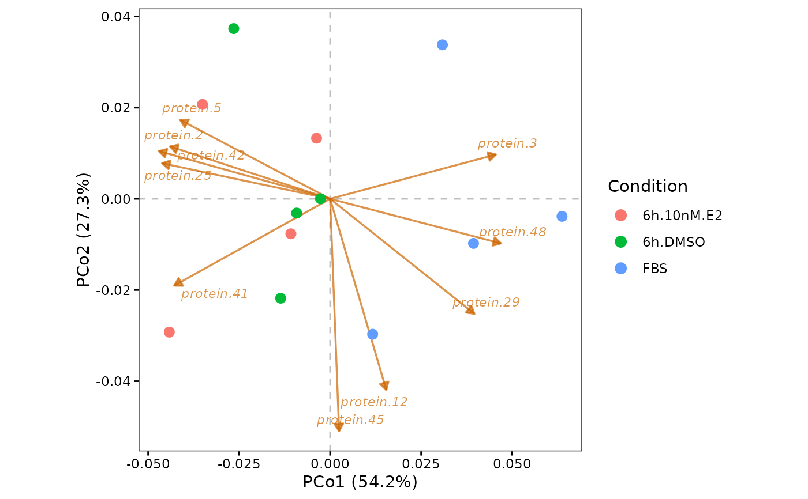

Plot a biplot of the principal coordinates from an object generated by perform.PCoA. The sample scores (dots) are overlaid with the projection of the proteins (arrows) onto the selected 2D plane of the ordination.
plot.PCoA.biplot(
DEprot.PCoA.object,
PCo.x = 2,
PCo.y = 1,
color.column = "column.id",
shape.column = NULL,
label.column = NULL,
plot.zero.line.x = TRUE,
plot.zero.line.y = TRUE,
n.loadings = 10,
min.abs.correlation = 0,
loading.color = "darkorange3",
loading.arrow.size = 0.6,
loading.label.size = 3,
loading.alpha = 0.7,
loading.scale = 0.8
)An object of class DEprot.PCoA, as generated by perform.PCoA providing a DEprot.object (the axis.loadings slot must not be empty).
Number indicating which Principal Coordinate (PCo) to display on the x-axis. Default: 2 (PCo2).
Number indicating which Principal Coordinate (PCo) to display on the y-axis. Default: 1 (PCo1).
String indicating the name of the column in the metadata to use as factor for the dot colors. Default: "column.id" (each sample a color).
String indicating the name of the column in the metadata to use as factor for the dot shapes. Default: NULL (all dots).
String indicating the name of the column in the metadata to use as label of the dots. Default: NULL (no labeling).
Logical value to indicate whether to plot a gray dashed line in correspondence of x=0. Default: TRUE.
Logical value to indicate whether to plot a gray dashed line in correspondence of y=0. Default: TRUE.
Integer indicating the number of top contributing protein projections (arrows) to display. Proteins are ranked by their Euclidean distance from the origin in the selected 2D plane. Default: 10.
Numeric value (0 to 1) indicating the minimum absolute correlation with at least one of the two axes required for a protein to be displayable. Default: 0 (no filtering).
String indicating the color used for the arrows and labels. Default: "darkorange3".
Numeric value indicating the linewidth of the arrows. Default: 0.6.
Numeric value indicating the font size of the labels. Default: 3.
Numeric value (0 to 1) indicating the transparency of arrows and labels. Default: 0.7.
Numeric value used as a multiplier to manually adjust the scaling of the arrows relative to the sample scores. Values > 1 make arrows longer, values < 1 make them shorter. Default: 0.8.
A ggplot object.
These arrows are NOT PCA loadings. A PCoA is computed on the sample-by-sample dissimilarity matrix
and therefore has no native protein loadings: nothing was rotated, and the proteins never entered the
ordination. The arrows displayed here are the a-posteriori correlation between each protein profile and each
principal coordinate (stored in the axis.loadings slot by perform.PCoA), i.e. the direction along
which each protein increases in the ordination space. They are an interpretative aid and must not be read as
the rotation coefficients returned by plot.PC.biplot.
Because the projections are correlations computed over the samples only, they are noisy when few samples are
available: with a typical proteomics design (6-12 samples) a protein carrying no signal can correlate strongly
with an axis by chance. The min.abs.correlation argument allows a minimal filtering, but the ranking
should always be treated as exploratory and validated with the differential analyses.
The arrow length is bounded by construction (correlations lie between -1 and 1), so it reflects how well a
protein aligns with the plane, not the magnitude of its intensity change.
# Compute the sample correlations
correlation <- plot.correlation.heatmap(DEprot.object = DEprot::test.toolbox$dpo.imp,
correlation.method = "spearman")
# The DEprot.object must be provided to compute the protein projections
pcoa <- perform.PCoA(DEprot.correlation.object = correlation,
DEprot.object = DEprot::test.toolbox$dpo.imp)
#> Only 7 of the 11 principal coordinates requested correspond to a positive eigenvalue and could be computed.
#> The dissimilarities are not euclidean-embeddable: 3 negative eigenvalue(s) detected (largest relative magnitude = 0.081).
#> The negative eigenvalues are non-negligible. Consider using 'distance.transformation = "sqrt"' or 'correction = "cailliez"'/'correction = "lingoes"'.
#> The proportions of variance are computed using only the positive eigenvalues as denominator.
# Plot the biplot of PCo1-vs-PCo2
plot.PCoA.biplot(DEprot.PCoA.object = pcoa,
PCo.x = 1,
PCo.y = 2,
color.column = "condition",
n.loadings = 10)
